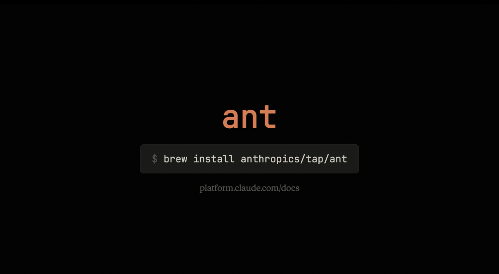
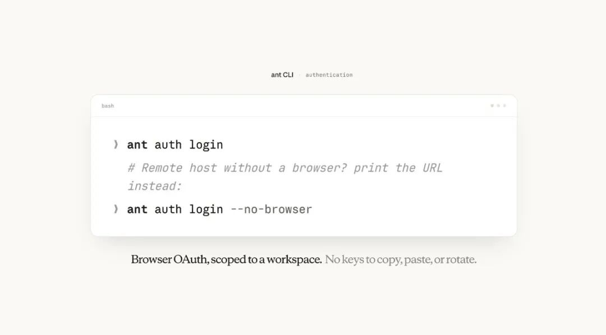

Anthropic终于给Claude平台推出CLI，叫ant。
简单说：ant就是一个命令行工具，让你在终端里直接跟 Claude API 对话，就像微信出了个命令行版本，你在黑窗口里打"发消息给张三：明天见"，它就真的发出去了。
ant就是这个东西，只不过发的不是微信消息，而是给 Claude 下指令、管理 AI Agent、上传文件、跑自动化任务。
登录认证，不用手动管API Key
装好之后，运行ant auth login，浏览器自动弹出OAuth授权流程，选好组织和工作区，凭证就存好了。

这个token会自动绑定到对应的工作区，CLI和SDK都能用同一套凭证，不用重复配置。
如果在没有浏览器的远程机器上，加个--no-browser参数，它会打印出授权URL，把返回的code粘贴回终端就行。
也可以继续用老方式，把API Key设到环境变量ANTHROPIC_API_KEY里，CLI会自动识别。
想知道当前用的是哪套凭证、绑定的是哪个工作区，运行ant auth status就能看到完整信息，方便排查问题。
如果需要同时操作多个工作区，可以用命名profile分别登录，然后用ant profile activate切换，或者在单条命令里用--profile临时指定。
每个API资源都是一个子命令
命令结构是：资源 动作，嵌套资源用冒号分隔：
ant <resource>[:<subresource>] <action> [flags]举个例子，发一条消息：
ant messages create \
--model claude-opus-4-8 \
--max-tokens 1024 \
--message '{role: user, content: "Hello, Claude"}'返回完整的API对象，在终端里会自动格式化展示。
目前支持的资源包括messages、models、files，以及处于beta阶段的agents、sessions、environments等，后者统一放在beta:前缀下，CLI会自动带上对应的beta请求头，不用手动传。
输出格式随心切换
默认在终端里是交互式的折叠浏览器（TUI），可以展开折叠JSON节点、按/搜索、按q退出。
如果要接入脚本，可以指定--format切换到json、yaml、jsonl等格式，也支持直接管道输出。
--transform参数支持GJSON路径语法，可以在命令里直接提取字段，不需要额外装jq：
ant beta:agents list \
--transform "{id,name,model}" \
--format jsonl配合--raw-output，可以把某个字段提取成裸字符串，直接赋值给shell变量：
AGENT_ID=$(ant beta:agents create \
--name "My Agent" \
--model '{id: claude-sonnet-4-6}' \
--transform id --raw-output)传请求体的三种方式
flags方式：标量字段直接映射成flag，结构化字段支持宽松的YAML语法，不用写严格的JSON：
ant beta:sessions create \
--agent '{type: agent, id: agent_011CYm1BLqPXpQRk5khsSXrs, version: 1}' \
--environment-id env_01595EKxaaTTGwwY3kyXdtbs \
--title "CLI docs test session"stdin方式：把完整的JSON或YAML文档通过管道传进去，和flags合并，flags优先级更高：
ant beta:agents create <<'YAML'
name: Research Agent
model: claude-opus-4-8
system: |
You are a research assistant. Cite sources for every claim.
tools:
- type: agent_toolset_20260401
YAML@文件引用：在字段值前加@，CLI会自动读取文件内容填进去，二进制文件自动base64编码。比如直接把PDF发给Messages API：
ant messages create \
--model claude-opus-4-8 \
--max-tokens 1024 \
--message '{role: user, content: [
{type: document, source: {type: base64, media_type: application/pdf, data: "@./scan.pdf"}},
{type: text, text: "Extract the text from this scanned document."}
]}' \
--transform 'content.0.text' --raw-output用CLI管理托管Agent
ant可以直接创建和更新Claude托管Agent。
推荐的做法是把Agent定义写成YAML文件，提交到Git仓库，再让CI跑ant beta:agents update来同步到Claude平台。这样Agent配置就跟代码一样有版本记录、可以做Code Review。
具体流程：
第一步，写agent定义文件summarizer.agent.yaml：
name: Summarizer
model: claude-sonnet-4-6
system: |
You are a helpful assistant that writes concise summaries.
tools:
- type: agent_toolset_20260401第二步，创建agent：
ant beta:agents create < summarizer.agent.yaml会返回一个agent id，记下来后面要用。
第三步，写environment定义文件summarizer.environment.yaml，指定沙箱配置，然后创建environment，同样会返回一个id。
第四步，启动session：
ant beta:sessions create \
--agent agent_011CYm1BLqPXpQRk5khsSXrs \
--environment-id env_01595EKxaaTTGwwY3kyXdtbs \
--title "Summarization task"第五步，发消息：
ant beta:sessions:events send \
--session-id session_01JZCh78XvmxJjiXVy3oSi7K \
--event '{type: user.message, content: [{type: text, text: "Summarize the benefits of type safety in one sentence."}]}'第六步，读对话结果：
ant beta:sessions:events list \
--session-id session_01JZCh78XvmxJjiXVy3oSi7K \
--transform 'content.0.text' --format auto --raw-output如果要实时监看session运行过程，用ant beta:sessions:events stream，事件会随到随打印。
Agent执行完之后，所有的events、tool调用、决策过程都可以从CLI里拉出来，全程可追踪。
Claude Code原生支持ant
Claude Code内置了/claude-api技能，知道怎么用ant。
装好CLI并完成认证之后，直接告诉Claude Code：
• 列出我最近的agent session，汇总哪些出错了 • 把./reports目录下的所有PDF上传到Files API，打印出对应的ID • 拉取session session_01...的events，告诉我agent在哪里卡住了
Claude Code会自动调用ant，解析结构化输出，然后给出结论，不需要写任何胶水代码。
脚本里怎么用
CLI设计上跟标准shell工具很好地组合在一起。
比如，--transform id --raw-output配合head和xargs，可以拿到第一个结果的ID然后传给下一条命令：
FIRST_AGENT=$(ant beta:agents list \
--transform id --raw-output | head -1)
ant beta:agents:versions list \
--agent-id "$FIRST_AGENT" \
--transform "{version,created_at}" --format jsonl调试的时候加--debug，会把完整的HTTP请求和响应打到stderr，API Key自动脱敏：
ant --debug beta:agents listShell补全也支持，bash、zsh、fish、PowerShell都有，一条命令安装好：
# zsh
ant @completion zsh > "${fpath[1]}/_ant"安装方式
三种方式可选：
macOS用Homebrew：
brew install anthropics/tap/antLinux/WSL用curl：
VERSION=1.10.0
OS=$(uname -s | tr '[:upper:]' '[:lower:]')
ARCH=$(uname -m | sed -e 's/x86_64/amd64/' -e 's/aarch64/arm64/')
curl -fsSL "https://github.com/anthropics/anthropic-cli/releases/download/v${VERSION}/ant_${VERSION}_${OS}_${ARCH}.tar.gz" \
| sudo tar -xz -C /usr/local/bin ant用Go从源码编译：
go install github.com/anthropics/anthropic-cli/cmd/ant@latest需要Go 1.22或更高版本。
装完验证：
ant --version完整文档和API参考：
https://platform.claude.com/docs/en/api/sdks/cli
--end--
最后记得⭐️我，每天都在更新：如果觉得文章还不错的话可以点赞转发推荐评论
/...@作者：你说的完全正确（YAR师）